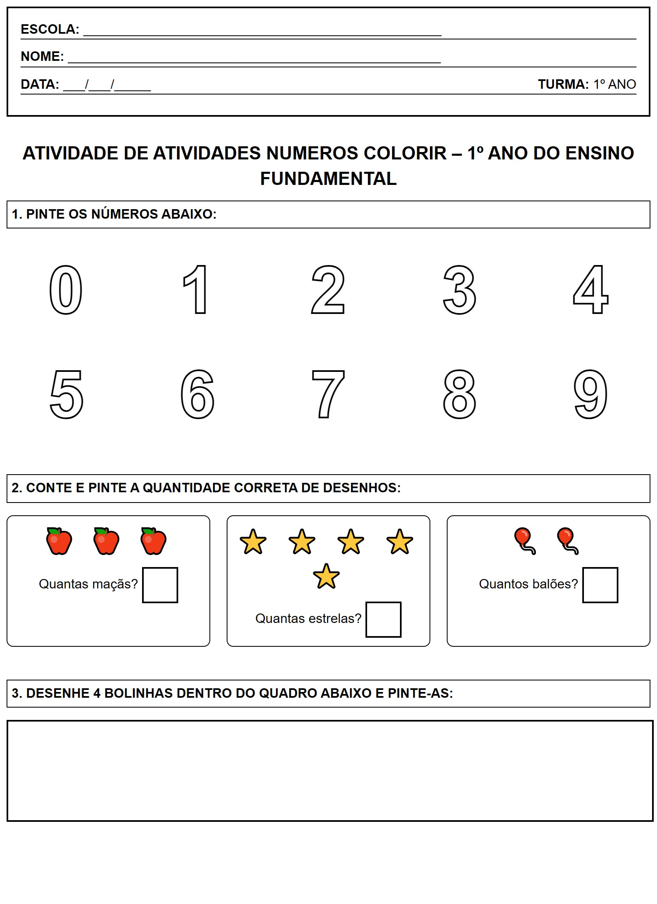

← Voltar ao Portal
ESCOLA:
_________________________________________________
NOME:
___________________________________________________
DATA:
___/___/_____
TURMA:
1º ANO
Atividade: Números para Colorir
1. PINTE OS NÚMEROS ABAIXO:
0
1
2
3
4
5
6
7
8
9
2. CONTE E PINTE A QUANTIDADE CORRETA DE DESENHOS:
🍎 🍎 🍎
Quantas maçãs?
⭐ ⭐ ⭐ ⭐ ⭐
Quantas estrelas?
🎈 🎈
Quantos balões?
3. DESENHE 4 BOLINHAS DENTRO DO QUADRO ABAIXO E PINTE-AS:
Visualização da Folha de Atividade
